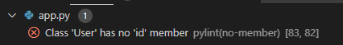
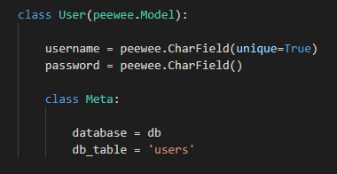
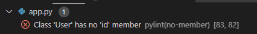
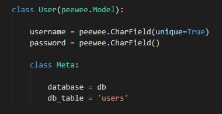

כשאני מבצעת פניה לUser.id, עולה השגיאה הבאה,
ככה"נ בגלל שלא יצרתי מופע של id בתוך המודל-

בכל הדוגמאות שראיתי לא יוצרים עמודה של id, גם במימושים בתוך peewee,
ובפועל השגיאה “רצה”. האם יש טעם לנסות לפתור את העניין, האם משהו נתקל במשהו דומה? 


כשאני מבצעת פניה לUser.id, עולה השגיאה הבאה,
ככה"נ בגלל שלא יצרתי מופע של id בתוך המודל-

בכל הדוגמאות שראיתי לא יוצרים עמודה של id, גם במימושים בתוך peewee,
ובפועל השגיאה “רצה”. האם יש טעם לנסות לפתור את העניין, האם משהו נתקל במשהו דומה? 
זה בסדר, אין טעם לנסות לפתור.
הסבר: זה קורה כי peewee “מזריק” באופן דינאמי attribute שנקרא id למחלקה, ו־pylint (הדבר שמראה לך שגיאות ב־VSCode) מנתח את הקוד באופן סטטי (פשוט ניגש לקוד של המחלקה ומסתכל אילו attributes הגדרת שם).
אם מאוד מפריעה לך השגיאה, תוכלי לנסות להוסיף את הקוד הבא במחלקה:
id = PrimaryKeyField()
כדי למצוא את הקוד, גיגלתי peewee pylint id